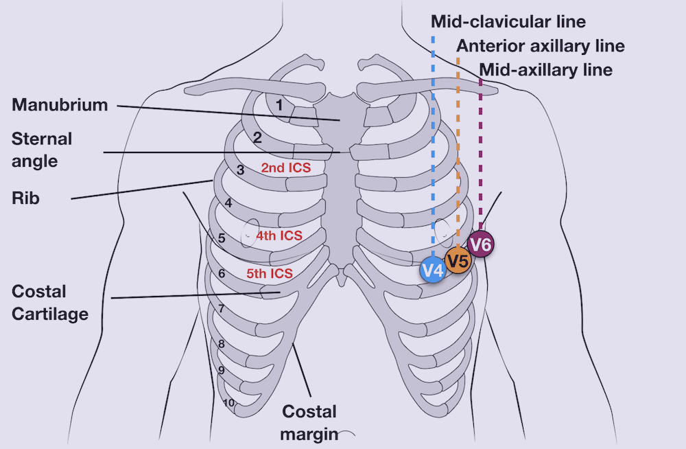

ZOLL X Series
General Information
Front Panel
Display Screen

Quick Access Keys
Lead
Selects the ECG input source for the first waveform trace.
12 lead

Displays the 12-lead monitoring screen.
Print

Starts or stops a continuous chart print.
Alarms
Displays the Limits option to allow the user to view/set all parameter
alarm limits.
Log

Opens the Log Control panel.
Setup

Displays the Setup menu to allow the user to access past readiness tests.
Treatment Summary

Displays treatment summary cases, which you can print.
Print Trends

Prints the trends that are displayed in the Trend Summary window.
Transfer Log
Transfers the current data in the log to a USB drive.
Acquire
Collects 10 seconds of 12-lead data for print or transmission.
Stop Acquisition

Stops acquisition of 12-lead data.
Patient Information

Allows you to enter information to accompany 12-lead data: patient
name, age, gender, and ID.
12-Lead Review

Reviews all your 12-lead captured data.
Transmit
Transmits 12-lead data.
More/Back
Goes to the next or previous level of quick access keys.
First Parade Tasks
ZOLL Unit Check
- There should not be any presence of blood or bodily fluid stains on the unit.
- There should not be any presence of cracks on the unit.
- There should not be any presence of holes along the tubing or frayed cables.
- Buckles and zips should be able to be securely fastened.
- There should not be any wear and tear on the separate compartment.
- The unit should not be past the servicing due date.
ZOLL Battery Check

- There should be at least 2× ZOLL batteries charged to a minimum of 3hrs .
- The battery should be able to be charged in the ambulance using either a auxillary power cable or a charger dock.
Charging ZOLL batteries

Slide the battery pack into the open battery bay and press it firmly against the back of the charger until it clicks.
Align the white arrow of the auxiliary power cable with the white dot on the input connector on the back of the unit and push it in.
ZOLL Power-on Test
- Visual alarm indicators should all light up when ZOLL is powering on.
- The RFU indicator should show "Do Not Use" when powering on and "Ready" after powering on.
- Display screen should prompt "Self-Test Passed" on display screen after powering on.
- The time and date of the ZOLL should be synchronised with the ACES MDT.
Ready For Use

The device is ready for use.
Do Not Use

- The battery is not properly installed. OR
- No battery is installed and auxiliary power is not present. OR
- A very low battery (below software shutdown limit) was installed. OR
- A critical self-test has failed.
ZOLL AED Check
- There should not be any presence of blood or bodily fluid stains on the cables.
- The cables should not be frayed and connectors should not be chipped.
- The self-test plug should be present.
- The defib pad packaging should be sealed and not expired.
- The Multifunction Cable (MFC) should be attached to the defib pad through the CPR Connector.

Multifunction Cable
CPR Connector
Defibrillator Short Test
The time shown on the test strip must be within 0730 — 0830hrs for DD and 1930 — 2030hrs for ND unless with valid reason.
- Connect the CPR Connector to the black self-test plug.
- Press the "Energy Select" button and select 30 joules.
- Press the "Charge" button and allow ZOLL to charge.
- Press the "Shock" button when the button lights up in orange.
- The test strip will be automatically printed. Check all tests are shown as pass.
ZOLL SpO2 Check
- The SpO2 adaptor , adult sensor and paediatric sensor should be all present.
- The portable SpO2 should be present.
- The cables should be clean and free from blood.
- The cables should not be frayed.
- Apply the SpO2 sensors to your finger and check that readings could be obtained from the ZOLL display screen.
ZOLL NIBP Check
- There should not be any frayed cables.
- The cables should be clean and free from blood and stains.
- Four BP cuffs (sizes 9, 10, 11, 12) should be present.
- Five neonatal BP cuffs (sizes 1, 2, 3, 4, 5) and a compatible single-lumen hose should be present inside the Maternity Bag.
- Apply the BP cuffs on yourself and perform BP measurements to check for leakage.
ZOLL ECG Check
- The cables should not be frayed.
- The cables should be clean and free of electrode gel and blood.
- The cables should neatly packed to prevent entanglement.
- Electrodes should be attached to ECG leads for immediate use.
- There should be a shaver, gauze, and spare electrodes in the ECG compartment.
Transmission Test
- Press the "12-lead" quick access key to display 12-lead monitoring screen.
- Press the "Aquire" quick access key to capture an empty 12-lead snapshot.
- Press the "Transmit" quick access key and transmit to "3rd Div Test" with navigation keys.
- Ensure the screen displays "Transmission successful" and the green visual alarm indicator lights up.
Proficiency Requirement
Changing Patient Mode
- Adult: more than 12 years old
- Paediatric: 29 days to 12 years old
- Neonate: 28 days or less
It is important to select the correct patient mode as it will affect the initial Cuff Inflation Target (CIT) pressure which in turn will affect the accuracy of BP reading.
- Use navigation keys to select the "Patient Mode" field on the display screen.
- The default patient mode is set to "Adult".
- Change to the appropriate patient mode based on age.
Recalibrating ZOLL Battery
Removing the battery will end the 12hrs recalibration process early. Therefore, it is always a good practice to leave a note indicating the start and end timing of recalibration.
- The "Recalibration" icon on a ZOLL battery lights up, prompting for a recalibration.
- Insert the battery pack into the charging bay.
- Press and hold the "Test Button" until "Test" icon lights up.
- Leave the battery to calibrate for 12hrs on the charging bay.
- When the battery is fully charged and has passed a factory-configured minimum capacity test, the "Ready" icon will light up. If the charger determines that the battery has insufficient capacity, the "Fault" icon will light up.
Changing System Date and Time
You are not allowed to change the system date and time without permission from the paramedic in charge.
- Select "Date and Time" field on the display screen with navigation keys.
- Specify the date and time by navigating to the respective fields and adjusting as necessary.
- Select the "Set Date and Time" field to apply changes.
Placing AED Pads
Hazard of AED
- Wet surfaces/patient's body
- Metallic surfaces
- Flammable gases
Contraindications of AED
- Obviously dead:
- Rigor Mortis
- Livor Mortis
- Injuries incompatible with life: Decapitation, Transected Torso, Decomposition
- Obviously alive: Patient has pulse
Preparing the chest
Excessive hair can inhibit good contact. Poor adherence and/or air under the electrodes can lead to the possibility of arcing and skin burns.
- Shave any hair off the chest only for areas where defib pads will be placed.
- Dry the chest from any bodily fluids.
- Shift any necklace away from areas where defib pads will be applied.
- Remove any medicated patches.
- Place defib pads 4 fingers away from any pacemaker.
Applying electrodes
When corpuls is used for chest compressions, the CPR indicator pad is to be torn off and placed below the corpuls stamp. This is because the corpuls piston is unable to keep its position on the compression point due to the slippery surface of the indicator pad, causing injuries to the patient's ribcage.
For patients less than 8y/o or weighing less than 25kg, use paediatric defib pads and make sure patient mode is set to paediatric.
- Align the CPR indicator pad on the bottom half of sternum .
- Apply one edge of the electrode securely to the patient.
- Roll the electrode smoothly from that edge to the other. Be careful not to trap any pockets of air between the gel and skin.
Applying Blood Pressure Cuffs
Avoid taking BP on arms with the following factors:
- AV fistula
- Stroke: avoid the weaker arm
- IV infusion/presence of IV cannula
- History of breast cancer/lymph node removal
- Ensure the limb to be used for measurement is relaxed and extended
- Place the BP cuff 2-3 cm above the elbow.
- Position the "Artery Index Marker" over the brachial artery and wrap the cuff around the arm.
- Ensure the cuff is of the correct size: The "Artery Index Marker" should fall within the range shown on the outside of the cuff.
Applying neonate cuffs
- Attach the single lumen hose to the ZOLL to use neonate cuffs.
- You may apply the BP cuff on the thigh of neonate patients.
Setting Automatic Interval BP
- Bring out the NIBP Control Panel by selecting the "NIBP" field on the display screen.
- Select "NIBP Mode" and use "Up/Down Arrow" buttons to toggle between "Auto" and "Mannual".
- Select “NIBP Auto Mode Interval” and choose the appropriate timing:
- Unstable patients: 5min
- Stable patients: 15min
Viewing Past NIBP/SpO2 Readings
- Press the "Display/Home" button until Trends Status window is displayed.
- Select the "Navigate here to scroll through trends" field at the bottom of the Trends window.
- Use navigation keys to scroll through past readings.
Printing Trend Summary
- Press the "More/Back" button on the bottom left of the screen
- Press the "Log" button
- Press the "Print Trends" button and select the trend to print.
Performing 12-lead ECG
ECG Landmarks
- LA/RA: below collar bone, meaty area
- LL/RL: below ribcage, away from stomach
- V1: 4th intercostal space, right sternal border
- V2: 4th intercostal space, left sternal border
- V4: 5th intercostal space, midclavicular line
- V3: in between V2 and V4
- V6: 5th intercostal space, mid-axillary line
- V5: in between V4 and V6
Acquiring 12-lead snapshot
- Place limb and chest leads onto the patient.
- Connect the 12-lead cable to the 4-lead cable in the correct orientation.
- Press the "12-lead" button to display 12-lead monitoring screen.
- Input patient's gender, age and last 4-digit NRIC using quick access keys.
- Instruct the patient to stay still for the duration of 12-lead snapshot.
- Press "Acquire" to capture the 12-lead snapshot when ECG stabilises.
Transmitting ECG to hospitals
- Follow the same steps from the Transmission Test, except choose the desired hospital instead of “3rd Div Test”
Configuring Waveform Display
- Use the “Lead” quick access key to toggle between all leads
- Alternatively, use navigation keys to select the “Lead” field to change the lead displayed.
General Troubleshooting
Troubleshooting SpO2 errors
- “Check Sensor”:
- The sensor is not connected to ZOLL
- Poor contact between the sensor and finger
- Factors that could cause inaccurate readings:
- Cold fingers: Rub to warm up
- Nail polish: Place sensor sideways
- CO/CN poisoning: Nil
- Movement of fingers: Hold to stabilise
- Poor perfusion: Avoid taking BP on the same side
Troubleshooting BP errors
- Inaccurate BP, showing the artefact sign. Common causes:
- Movement
- Incorrect cuff size
- ‚ÄúReading Failed‚Äù ü°™ ZOLL is unable to detect blood pressure (Readjust cuff OR check radial pulse)
- ‚ÄúAir Leak‚Äù ü°™ Check for leak on BP cuff, hose, and points of connection
Troubleshooting ECG errors
- “Lead fault”:
- Lead is detached from or in poor contact with the patient's body.
- ECG cable is detached.
- Artefacts/Shaky ECG lines:
- Patient is moving: Avoid placing 4-lead on the body for breathless patients
- Poor contact between the electrode and patient's body due to sweat, hair, air pockets, or the lack of gel
- Movement of cables due to wind
- Leads are placed inaccurately onto bony regions of the patient's body
Troubleshooting failed transmission
- Going to an open space to transmit
- Change the modem's extension cable
- Connect the modem directly to the ZOLL
- Check if the SIM card is present inside the modem
- If the problem persists, inform the paramedic in charge and Equipment IC, then submit the Equipment Service Report accordingly